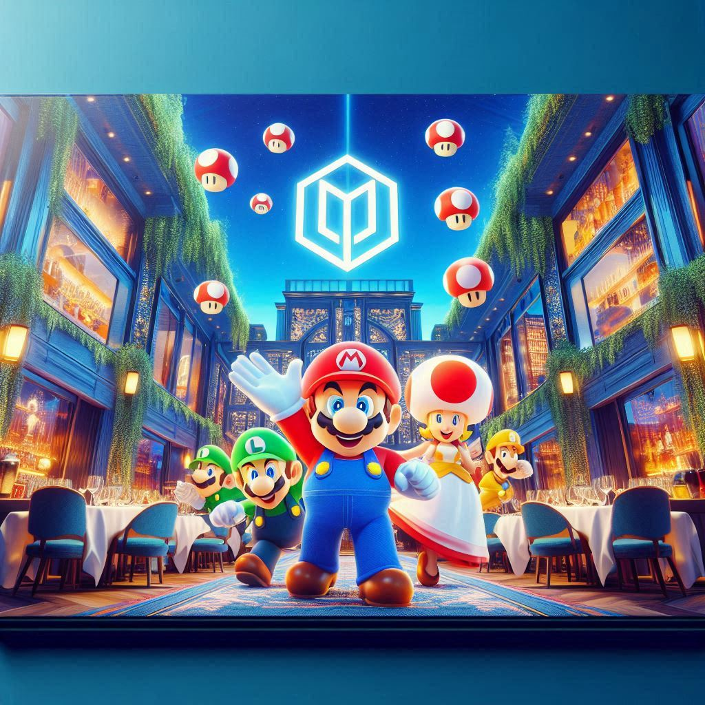

| Plat | Description | Prix |
|---|---|---|
| üçù Spaghetti alla Carbonara | Recette romaine traditionnelle avec guanciale, ≈ìuf et pecorino romano | 13,90 ‚Ǩ |
| üçï Pizza Margherita | Tomate, mozzarella di bufala, basilic frais | 11,50 ‚Ǩ |
| ü•ó Salade C√©sar | Poulet grill√©, parmesan, cro√ªtons, sauce C√©sar maison | 10,90 ‚Ǩ |
| üçÜ Lasagnes v√©g√©tariennes | Aubergines, courgettes, sauce tomate, b√©chamel | 12,50 ‚Ǩ |
| üêü Filet de saumon | Cuit √† la plancha, accompagn√© de l√©gumes grill√©s | 16,90 ‚Ǩ |
| üç® Tiramisu maison | Recette familiale au caf√© et mascarpone | 6,00 ‚Ǩ |
| ☕ Café | Expresso italien | 2,00 € |
|
Tous nos plats sont faits maison avec des produits frais. |
||